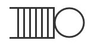

Calcul d'(auto-)adaptation nécessite un contexte d'état
Pas uniquement pour système élististe, un peut être un DAS
Besoins en distribution
Distribution : répartition des modules sur différents noeuds
Performance et monté en charge
Grappes calculs, Cloud computing
, ...
Duplication et tolérance aux fautes
Défaillance d'un noeud
Besoins en distribution et hétérogénité
Outre la puissance les noeuds peuvent avoir des propriétés propres
Proche des utilisateurs
Informatique mobile
Adapté au contexte physique
Informatique embarqué (consommation)
Capteurs
Domaine
>Problème
Etat de l'art
Kevoree
Validation
Conclusion
Système adaptatif et distribué
En cas d'erreur réseau, lecture direct d'état et adaptation impossible
Points durs
Monitoring(introspection), Exécution(intercession) et déconnections ?
Adaptation bloqué pendant la déconnection ? Si non comment ?
La divergence inhérente à la distribution
Divergence de la couche reflexive en cas d'isolation
Divergence de la couche reflexive en cas d'adaptations concurrentes
Hétérogénité en besoin de cohérence
Cohérence forte de la couche reflexion
Cohérence à terme
Divergence imposé par le cas métier : périodique, limitation batterie
Problème de recherche identifié
Quel paradigme de conception et développement pour système :
Modulaire déployable en continue
Adaptatif et réflexif (introspection et intercession)
Distribuable sur différentes resources
Possédant des noeuds hétérogènes
Possédant des capacités de divergence hétérogènes
Domaine
Problème
>Etat de l'art
Kevoree
Validation
Conclusion
Concepts de programmation modulaire
Modèles à Agents/Acteurs
Sémantique réactif asynchrone : files d'attentes
Isolation et distribution sur plusieurs ressources
Contrat d'échange non explicite, réutilisation

Modèle à composants
Dépendances et typage (ports) Ö
Cycle de vie (start/stop)
Manque : isolation et concurrence
ÖÖ
Concepts de manipulation asynchrone
Model@Runtime : reflexion asynchrone
Garder un modèle du système à l'exécution
Assurer un lien causal à la demande
Õ
@
Õ
@
Concepts de programmation distribué
Algorithmes de consensus
Cohérence globale d'une donnée répliquée
Qorum majoritaire : algorithme de Paxos
Algorithmes épidémiques
Prapagation virtal, adapté aux réseaux P2P
Ordre partiel : algorithme de type Gossip
Cohérence à terme
Convergence des répliquats à T+n
Résolution de conflits (ordre de résolution connu ou non)
Etat de l'art
Hello
Hello
Hello
Hello
>Merci
Questions
DAIS'12 / Dissemination of reconfiguration policies on mesh networks / F.
Fouquet, E. Daubert, N.
Plouzeau, O. Barais, J. Bourcier, JM. Jezequel
CBSE'12 / A Dynamic Component Model for Cyber Physical Systems / F.
Fouquet, O. Barais, N. Plouzeau,
J-M. Jézéquel, B. Morin and F. Fleurey
MODELS'12 / An Eclipse Modelling Framework Alternative to Meet the
Models@Runtime Requirements / F.
Fouquet, G. Nain, B. Morin, E. Daubert, O. Barais, N. Plouzeau and J-M. Jézéquel
ICSE'12 Workshop / A models@runtime framework for designing and managing
Service-Based Applications / E.
Daubert, F. Fouquet, O. Barais, G. Nain, G. Sunyé, J-M. Jézéquel, J-L. Pazat and B. Morin
SEAA'10 / Integrating IoT and IoS with a Component-Based approach / G.
Nain, F. Fouquet, B. Morin, O.
Barais, JM. Jézéquel